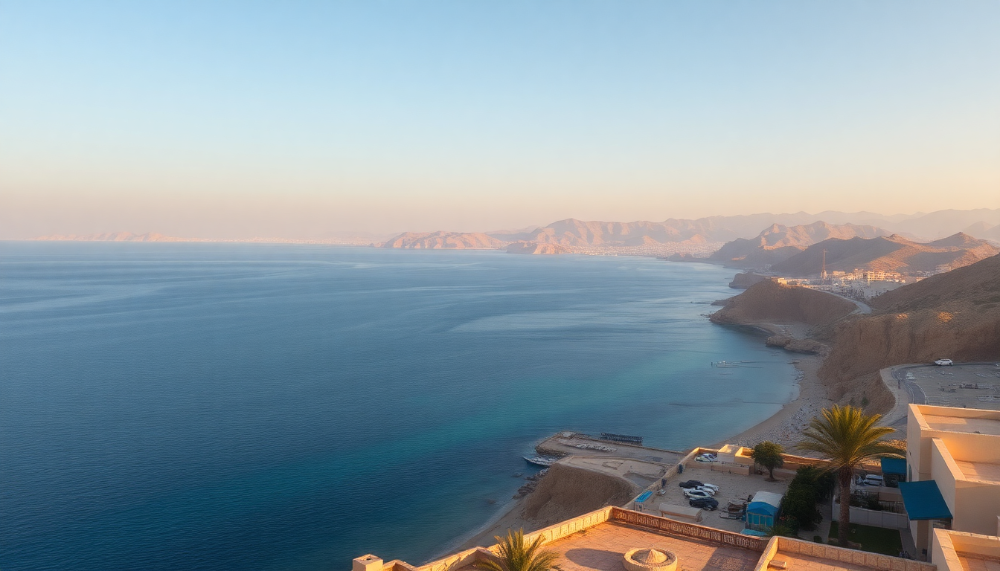

Where to Stay in Hurghada: Best Hotels for Every Budget

I landed in Hurghada expecting a dusty resort strip and ended up staying three extra days. The Red Sea coast has a split personality — the tourist corridor of Sahl Hasheesh, the dive hub of Dahar, the lagoon-heavy resorts of El Gouna. Where you pick your base changes your entire trip. Here’s what I learned after sleeping in five different properties across town.
What is the best neighborhood in Hurghada for first-time visitors?
First-timers should base themselves in Sahl Hasheesh or El Gouna if you want the classic Red Sea resort experience without the chaos. Sahl Hasheesh is a purpose-built strip about 20 minutes south of the airport. It’s a row of big hotels, private beaches, and a long promenade that’s mostly empty during the day but gets a little life at night.
I stayed at Steigenberger Alaya Beach Club — a four-star that felt more like a five-star for the price. The house reef was the big draw. I snorkeled straight off the pier and saw triggerfish, a moray eel, and a turtle within ten minutes. The pool area is massive, and the all-inclusive buffet was solid (not great, but solid).
El Gouna, by contrast, is a self-contained lagoon town built by Orascom. It’s cleaner, greener, and more European-feeling than the main city. The downside — it’s 30 minutes north of the airport, and taxis cost more. If you want to dive the famous sites like Abu Dabbab or Giftun Island, you’ll pay extra for the transfer.
- Sahl Hasheesh — best for resort vacationers who want a quiet beach and house reef
- El Gouna — best for couples and families who want a walkable, clean town with restaurants and a marina
- Dahar — the old city; gritty, real, and close to the dive shops and ferry port
- El Mamsha — a newer beachfront promenade in central Hurghada with mid-range hotels and a few cafes
Which area is best for budget travelers and backpackers?
If you’re on a tight budget, skip the resort strip and head to Dahar — the original downtown area. It’s noisy, dusty, and full of character. The main drag is Sheraton Street, lined with kebab joints, juice stalls, and souvenir shops that haggle hard. It’s not pretty, but it’s where the real Hurghada lives.
I stayed at Sea Garden Hotel — a basic three-star a block from the water. The room was clean, the AC worked, and the rooftop terrace had a decent view of the marina. It’s not the Ritz, but for $25 a night including breakfast, it was a steal. The staff helped me book a day trip to Giftun Island for $30 — half what the resort guests paid.
For hostel-style accommodation, Hamburg Pension is the go-to. It’s a backpacker institution — shared rooms, a rooftop bar, and a social scene that revolves around dive trips. You’ll meet people there who are on month-long Red Sea circuit trips.
- Dahar — budget hotels, local restaurants, dive shops, and the ferry terminal for Sharm el-Sheikh
- Hamburg Pension — backpacker hub with dorm beds and group dive packages
- El Gouna — not budget-friendly, but Zeytuna Beach Hostel offers cheap beds if you book ahead
What are the best mid-range hotels in Hurghada?
Mid-range in Hurghada gets you a lot of value — think four-star resorts with pools and beach access for what a motel costs in Europe. I focused on properties that offered a good balance of location, food, and service.
Titanic Palace in Sahl Hasheesh was my favorite mid-range stay. The architecture is over-the-top (think Vegas meets Pharaonic kitsch), but the rooms are spacious and the buffet is above average. The beach is wide and sandy, and the pool complex has a lazy river that my kids refused to leave. It’s a 15-minute walk down the promenade to Moby Dick — a decent seafood restaurant that does grilled prawns and calamari.
In central Hurghada, Mercure Hurghada on El Mamsha promenade is a solid choice. The location is great — right on the beach strip, walking distance to El Dahar Souk and a dozen kitesurfing schools. Rooms are dated but clean, and the breakfast spread includes fresh falafel and ful medames. The pool is small but the sea access is good.
- Titanic Palace — over-the-top design, great for families, lazy river
- Mercure Hurghada — central location, dated but clean, good breakfast
- Pickalbatros Citadel Resort — huge property in Sahl Hasheesh with multiple pools and a water park
Which luxury resorts are worth the splurge?
The Red Sea coast has some of the best value luxury in Egypt. You can get a five-star suite with a private pool for under $200 a night in high season. The trick is picking a resort that delivers on service and location, not just marble lobbies.
Oberoi Sahl Hasheesh is the gold standard. It’s a low-rise property built around a central lagoon, with private villas that have plunge pools and direct beach access. The service is genuinely attentive — they remembered my coffee order after the first morning. The house reef is one of the best in the area; I saw a dugong on my second snorkel. The downside — it’s isolated. You’re stuck eating at the resort’s three restaurants, which are excellent but pricey.
Steigenberger Pure Lifestyle in El Gouna is another top pick. It’s adults-only, which keeps the vibe calm. The pool area is tiered with sea views, and the spa does a decent hammam. The all-inclusive package actually includes premium drinks (most resorts water down the cocktails). The marina is a 10-minute walk, where you can catch a water taxi to Mangroovy Beach for lunch.
- Oberoi Sahl Hasheesh — best for couples, private villas, incredible house reef
- Steigenberger Pure Lifestyle — adults-only, premium all-inclusive, near El Gouna marina
- Rixos Premium Magawish — huge resort with water slides and a private beach
Where should divers and snorkelers stay?
Divers should prioritize proximity to the dive sites and the ferry port. Most day boats leave from Dahar Marina or Abu Tig Marina in El Gouna. Staying in Dahar saves you the taxi cost and the early morning transfer.
I spent three nights at Hurghada Marriott Beach Resort — it’s right next to the marina, and the dive center on-site (Colona Divers) runs trips to Giftun Islands, Abu Ramada, and Shaab El Erg. The house reef is decent — I saw a hawksbill turtle on a dawn snorkel. The hotel itself is dated (think 90s atrium style), but the rooms are large and the pool is heated.
For serious divers, Diving Lodge Hurghada is a no-frills option on the marina. It’s not a resort — it’s a dive lodge with basic rooms and a hyper-focused operation. The boats leave at 8am sharp, and the guides know the currents at The Brothers Islands and Daedalus Reef better than anyone. They also do night dives at El Fanadir — a shore dive with plenty of macro life.
- Hurghada Marriott Beach Resort — convenient to Dahar Marina, good house reef
- Diving Lodge Hurghada — bare-bones accommodation, top-tier dive operation
- Baron Resort — next to the marine park, quiet beach, good for snorkelers
What about El Gouna — is it worth the premium?
El Gouna is essentially a gated community built around lagoons and golf courses. It’s beautiful — manicured lawns, pastel-colored villas, and a marina that feels like a small-scale Portofino. But it’s not Hurghada. If you want authentic Egyptian street life, you won’t find it here.
I stayed at Movenpick Resort & Spa El Gouna — the rooms are in bungalows spread along the lagoon, and the breakfast buffet is the best I had in Egypt (the fresh mango juice and baked feta pastries were addictive). The water sports center on-site rents kayaks and paddleboards. The downside — everything costs more. A beer at the marina bar was $6, compared to $1.50 in Dahar.
If you’re a kitesurfer, El Gouna is the place. The wind is consistent, and the lagoons are flat and shallow. Kite Zone El Gouna is the main school — they offer beginner courses and gear rental.
- Movenpick Resort & Spa El Gouna — best breakfast, lagoon views, kayak rentals
- Kite Zone El Gouna — top kitesurfing school, gear rental
- El Gouna Marina — restaurants, bars, water taxis to nearby beaches
FAQ
Is it safe to stay in Dahar as a solo female traveler? Yes, but you need to be street-smart. Dahar is a working-class Egyptian neighborhood, not a resort. I walked around alone during the day without issues, but I avoided Sheraton Street after dark. Taxis are cheap — use the white ones and agree on the fare before getting in. The hotels in Dahar are used to solo travelers, and most have security at the entrance.
What is the best time of year to visit Hurghada? October through April is the sweet spot. Summer (June–August) is brutally hot — 40°C is common — and the Red Sea water temperature hits 30°C, which reduces visibility for diving. I went in November and had 26°C days and 20°C nights. The wind picks up in March and April, which is great for kitesurfers but makes the sea choppy.
Do I need a visa to visit Hurghada as a tourist? Most nationalities get a visa on arrival at Hurghada International Airport. You pay $25 in cash (USD or EUR) and get a sticker in your passport. The line moves fast if you have exact change. If you’re staying in a resort, the hotel can usually help you extend it. I recommend getting an eSIM from Airalo before you arrive — it saves you hunting for a SIM card in the arrivals hall.
Conclusion
- For a classic resort vacation with a good house reef, stay in Sahl Hasheesh — Steigenberger Alaya Beach Club and Titanic Palace offer the best value.
- Budget travelers and divers should base in Dahar — Sea Garden Hotel or Hamburg Pension keep costs low and proximity high.
- Luxury seekers should splurge on Oberoi Sahl Hasheesh for privacy or Steigenberger Pure Lifestyle for adults-only vibes.
- El Gouna is worth the premium if you want a clean, walkable town with kitesurfing — book Movenpick Resort & Spa for the lagoon rooms.
- Avoid summer unless you’re heat-tolerant; November and March offer the best weather for diving and exploring.